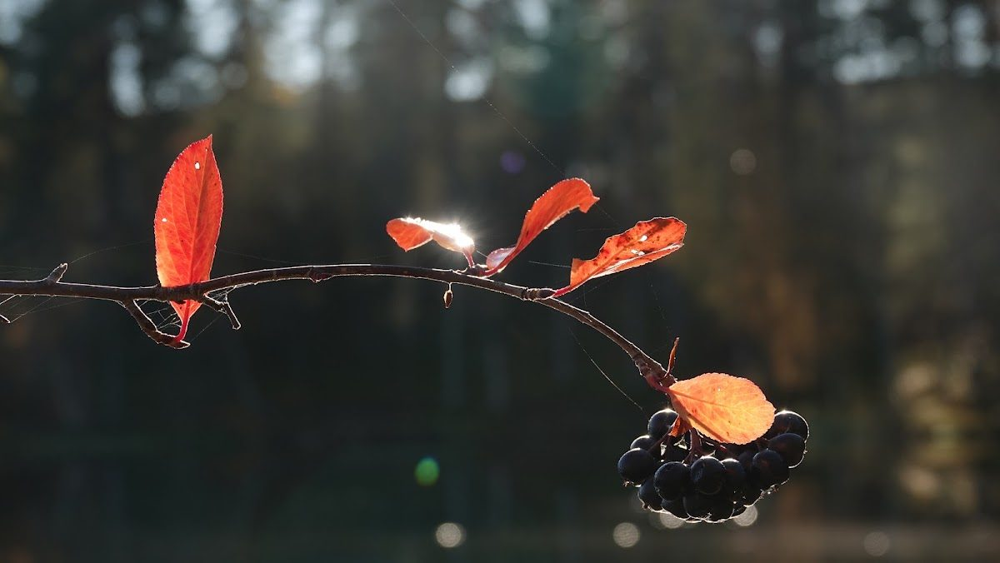

Kaavoitus
Yli 50 kaavaa yli 30 kuntaan: yleis- ja asemakaavaprosesseja, joihin sisältyy yli 3 500 km rantaviivaa ja yli 500 erillistä järveä. Yli 20 vuoden kokemus on opettanut millainen kaava kestää oikeudellisen arvioinnin ja kuinka suuri merkitys osallisten kannalta on selkeydellä valituskierteen välttämiseksi. PlanDisain pyrkii olemaan näiltä osin edelläkävijä.